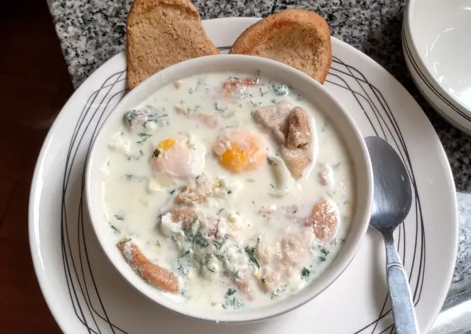

Descripción
La Changua, una sopa tradicional de la región de Bogotá, Colombia, ideal
para un desayuno nutritivo y reconfortante.
Ingredientes
- 4 tazas de agua
- 2 tazas de leche
- 4 huevos
- 2 cebollas largas, finamente picadas
- 1 manojo de cilantro, picado
- 4 tajadas de pan (preferiblemente pan viejo o tostado)
- Sal al gusto
- Pimienta al gusto
- 1 cucharada de mantequilla (opcional)
Pasos
-
En una olla grande, añade el agua y la leche. Lleva a ebullición a fuego
medio.
-
Agrega las cebollas largas finamente picadas y una pizca de sal. Deja
cocinar por unos 5 minutos.
-
Baja el fuego y agrega los huevos uno por uno, con cuidado de no romper
las yemas. Cocina por unos 3-4 minutos hasta que las claras estén
cocidas pero las yemas aún estén líquidas.
-
Añade el cilantro picado y la pimienta al gusto. Cocina por otros 2
minutos.
- Si lo deseas, añade la mantequilla para darle un sabor más rico.
-
Sirve la changua caliente en tazones individuales, colocando una tajada
de pan en cada tazón antes de verter la sopa.
- Disfruta de este reconfortante desayuno tradicional bogotano.